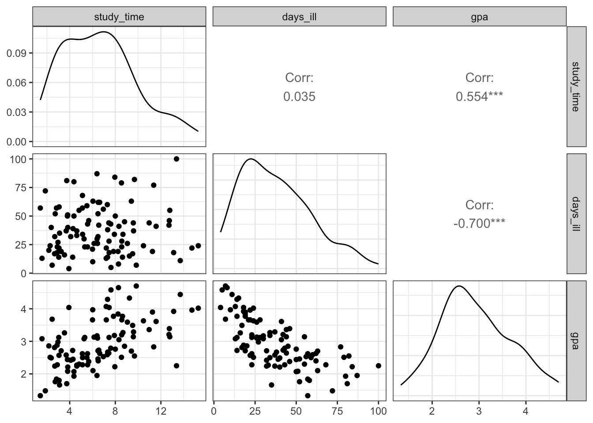

8 Statistical Inference and Association
8.1 Content
So far, we have described variety of methods to wrangle and explore data in R. After performing cleaning and exploratory analysis, it is common to perform more formal tests on the data to verify whether the relationships we hypothesized hold under the scrutiny of tests supported by statistical theory. In this chapter we will present couple of testing such relationships. While some formal knowledge of statistical inference will be useful, the chapter does not rely on your background knowledge to heavily.
Comparing means
While a mean is a good measure of our data and comparing means across groups can help us determine the way a given variable varies depending on some conditions - for example, whether the average GDP growth over a certain period differs between two countries or whether average earnings are different depending on people’s gender and race. However, it may seem difficult to determine whether such difference is really meaningful, especially that we usually don’t have the entire population we are examining at hand, but only a (pressumably random) sample of the population. For example, suppose we randomly choose 5 men and 5 women and compute their average earnings. We obtain 35000 pounds for men and 40000 pounds for women. Should we claim that men on average earn less than women, based on this data? What difference is sufficient to claim that such difference exists in the overall population? Such questions are answered by statistical inference.
Is mean different from 0? - one sample t-test
We’ll start with a simple case. The data in the file wages.csv contains the information on the average salary of a sample of 100 individuals in 2005 and2 2010. We are interested in whether there was any growth in their salary. First, we read the data and obtain the percentege growth:
wages <- read_csv('data/wages.csv')
Parsed with column specification:
cols(
gender = col_character(),
salary2005 = col_double(),
salary2010 = col_double()
)
wages <- wages %>% mutate(change = (salary2010 - salary2005)/salary2005)We can then examine the average:
We see that the mean is around 0.015. Is that sufficient to claim that the average salary of employees in our target population has grown between 2005 and 2010? To check that, we can perform the so-called t-test, which takes into account the variability of our sample and its size, and determines the probability that we falsely reject the hypothesis that the mean is equal to 0 - this probability is the p-value. Note that p-value is not the probability of the mean being equal to 0. For those familiar with frequentist statistical inference, recall that the p-value is the probability of obtaining a statistic more extreme than the sample statistic in under the assumption that the null hypothesis is true in repeated sampling.
To conduct the t-test, we can simply use the t.test function:
t.test(wages$change)
One Sample t-test
data: wages$change
t = 2.7211, df = 99, p-value = 0.007688
alternative hypothesis: true mean is not equal to 0
95 percent confidence interval:
0.004033511 0.025755527
sample estimates:
mean of x
0.01489452 The p-value is usually the most important part of the output produced by the function. In this case, it is 0.0077. This means, that the mean is significantly different from 0 at the 95% confidence level. Confidence level is a way in which we can quantify our certainty in the difference of the parameter from some hypothesized value (in this case 0). The 95% confidence level is one of the most commonly used thresholds in the social sciences. Generally, the recipe for checking if a p-value satisfies a cerain confidence level is to subtract our confidence level from 1 and compare it with the p-value. If the p-value is smaller than the value obtained in the subtraction, the significance of the test statistic satisfies it. So, in our example, for 95% confidence \(1 - 0.95 = 0.05\) and 0.0077 $ < 0.05$, thus we can say the the mean is significantly different from 0 at the 95% confidence level.
Another important information reported by the output of the t-test is the confidence interval. The confidence interval provides us with a way of quantifying our uncertainty about the underlying value of a statistic (in our case the mean), given the variability of our sample (measured by the standard deviation, as described in chapter 4. Suppose we take 100 random samples from our original population. The 95% confidence interval describes the range into which we exepct the mean of 95 out of 100 samples to fall. In case of the mean, it is given by \(\bar{\mu}\pm 1.96SE(\bar{\mu})\), where \(\bar\mu\) is the sample mean we obtained and \(SE(\bar{\mu})\) is the standard error of the mean given by \(\sigma/\sqrt{n}\), which is the sample standard deviation divided by the square root of the number of the observations in our sample. Note that 95% confidence interval not including 0 is equivalent with the statistic being significantly different from 0 at the 95% level.
Error bars
The confidence interval around the mean can be displayed in ggplot using the geom_errorbar function. The so-called errorbar is a good way to display the range of the likely values around the mean.
In case of our data, to plot the errorbars, we first compute the standard error of the mean using the formula discussed above.
We than create a bar plot and add the geom_errorbar on top of it. Note that in this case we specify the x aesthetic as a chraracter 'Wage change'. This is because it is unusual to plot just one bar in the plot, and geom_col and geom_errorbar require some x aesthetic to be passed.
ggplot(wages_summary, aes(x = 'Wage change', y = change_mean)) +
geom_col(width = 0.2) +
geom_errorbar(aes(ymin = change_mean - 1.96 * change_err,
ymax = change_mean + 1.96 * change_err), width = 0.1) +
labs(x = '', y = 'Mean change in wage')
Are two means different? - two sample t-test
By simple extension, we can apply the logic of the t-test to the difference between two means within one sample - this is so called a two sample t-test and is implemented in R by the same function. The grouping variable is specified using the formula notation, which we will encounter in the next chapter when dealing with linear regression. To test the difference in mean of variable x between groups defined by y, we specify t.test(x ~ y). So, coming back to our example, we can examine whether the average salary in 2005 is different for male and female employees.
t.test(salary2005 ~ gender, data = wages)
Welch Two Sample t-test
data: salary2005 by gender
t = -2.4595, df = 97.494, p-value = 0.01568
alternative hypothesis: true difference in means is not equal to 0
95 percent confidence interval:
-19486.287 -2082.285
sample estimates:
mean in group F mean in group M
31020.72 41805.01 The result seem to be significant, meaning that we have statistical evidence that there is a real difference between male and female earnings in the underlying populations (or more precisely, that if we took 100 samples from the underlying population, more than 95 of them would show a non-zero difference). Based on our sample, however, the magnitude of that difference is quite difficult to determine, as we expect it to range between 19000 and 2000 dollars. We can visualize this again using geom_errorbar:
wages %>%
group_by(gender) %>%
summarise(wage_mean = mean(salary2005),
wage_err = sd(salary2005)/sqrt(n())) %>%
ggplot(aes(x = gender, y = wage_mean)) +
geom_col(width = 0.3) +
geom_errorbar(aes(ymin = wage_mean - wage_err,
ymax = wage_mean + wage_err), width = 0.2) +
ylab('Average salary in 2005')
`summarise()` ungrouping output (override with `.groups` argument)
Relationship between two continuous variables
Covariance
So far we have discussed some techniques for looking at statistical relationships between one continuous variable (such as wage) and one categoric variable (such as salary). Under many circumstances, however, we would be interested in measuring the association between two continuous variables. In this part we will consider data on a sample of students with free variables: average weekly time spent studying, days a student has been home ill and achieved GPA.
scores <- read_csv('data/scores.csv')
Parsed with column specification:
cols(
study_time = col_double(),
days_ill = col_double(),
gpa = col_double()
)We can examine pairwise relationships between the variables using the pairs() function, which is a useful tool when analyzing datasets with multiple continuous variables.

Let’s start by interpreting this plot. The rectangles with variable tell as the name of the axis. For example, the plot in the lower left corner shows the relationship between the GPA (x axis) and study time (y axis). We can see that students in our sample who spent more time studying seem to have had higher grades - points higher on one axis tend to also be higher on the other. On the other hand, students who were ill more had, on average, achieved lower grades. There seems to be no relationship between being ill and time spent studying.
In statistical terms, this relationship can be measured with covariance between these two variables. Recall our discussion of variance in the exploratory analysis chapter. We calculated it for vector x using sum((x - mean(x))^2)/(length(x) - 1), or the var(x) function for short. Covariance is essentially the same, but calculated for two variables instead of one, using sum((x - mean(x)) * mean((y - mean(y))))/(length(x) - 1) or the cov function for short. You can see that demonstrated below:
cov_fun <- function(x, y) sum((x - mean(x)) * (y - mean(y)))/(length(x) - 1)
cov_fun(scores$gpa, scores$study_time)
[1] 1.337834
cov(scores$gpa, scores$study_time)
[1] 1.337834The variance is actually nothing else but covariance of a variable with itself!
Essentially covariance measures the average of element-wise product of each observations deviation from its mean for two variables. This may sound complicated, but breaking it down makes it simple. In our two variables, gpa and days_ill, people who have grades higher than the average grade also tend to study longer than the average study time. So, if for all students we subtract the mean grade and mean study time from their respective grades and study times, the average of that will be positive.
If, on the other hand people who have higher grades than average tend to have lower time spent ill at home than average, the average of the products of these demeaned (i.e. with the mean subtracted from each) variables will be negative, since the majority of the products will be negative.
Finally, if there’s no relationship between two variables - for example between days_ill and study_time, we expect the average of the products of the demeaned variables to be close to 0, since around the same number will be positive and negative.
The last example seems to be incorrect? How is that possible that the covariance between study_time and days_ill is larger than the covariance between study_time and gpa, even though the plot suggests a much stronger relationship between the latter? We will explore this in the next section on correlation.
Correlation
The downside of covariance as a measure of relationship is that it is completely dependent on the units of the two variables measures, or, more percisely, the range of values they take. If we take covariance average time spent studying and GPA and compare it with the covariance between average time spent studying and time ill, the latter will be greater, simply because time is expressed in hours and days, with values ranging between 0.8 and 15.1 and 1 and 110 respectively, while GPA ranges between 1 and 5:
So, the values we get by multiplying study_time and days_ill will tend to be higher in general. This makes the use of covariance problematic in estimating the objective strength of the relationship between two variables.
In order to avoid it, we use correlation instead. Correlation is simply covariance, but divided by the product of the standard deviation of each of the variables. Without going into the mathematical details, suffice to say that it standardizes the covariance, so that it ranges between -1 and 1, -1 meaning perfect negative relationship (i.e. when one variable increases, the other always decreases) and 1 meaning perfect positive relationship (when one variable increases, the other decreases). 0 means that there’s no relationship between these variables.
We can see that again using R code. cor_fun is created for demonstration purposes, but the usual function used in R to obtain correlation is simply cor.
cor_fun <- function(x, y) cov_fun(x, y)/(sd(x) * sd(y))
cor_fun(scores$gpa, scores$study_time)
[1] 0.5538811
cor(scores$gpa, scores$study_time)
[1] 0.5538811Now we can see, that the relationship between study_time and days_ill is indeed close to 0:
We can also use cor on entire data frame to obtain the so-called correlation matrix, which shows pairwise relationships between two variables
cor(scores)
study_time days_ill gpa
study_time 1.00000000 0.03523657 0.5538811
days_ill 0.03523657 1.00000000 -0.7001128
gpa 0.55388114 -0.70011285 1.0000000Note that the diagonal is always 1, i.e. the correlation of a variable with itself is always 1.
For obvious reasons, the function also won’t work if applied to a data frame containing any text data:
To visualize pariswise relationships between two variables using a plot that is a bit more sophisticated that the one produced by pairs() we can use the ggpairs function from the GGally package, which produced a ggplot style plot, presenting correlations, density plots and scatter plots of all the numeric variables in our dataset:

Further details
Here some more details on how the p-value is computed:
err <- sd(wages$change)/sqrt(nrow(wages))
tscore <- mean(wages$change)/err
df <- length(wages$change) - 1
pt(tscore, df, lower.tail = FALSE) * 2
[1] 0.007687596
t.test(wages$change)
One Sample t-test
data: wages$change
t = 2.7211, df = 99, p-value = 0.007688
alternative hypothesis: true mean is not equal to 0
95 percent confidence interval:
0.004033511 0.025755527
sample estimates:
mean of x
0.01489452 8.2 Summary
Functions list
| function | package | description |
|---|---|---|
| cor_fun() | .GlobalEnv | NA |
| cov_fun() | .GlobalEnv | NA |
| cov() | c(“pROC”, “package:stats”) | NA |
| var() | c(“pROC”, “package:stats”) | NA |
| length() | base | get number of elements in a vector or list |
| library() | base | load an R package |
| mean() | base | get mean of a vector |
| nrow() | base | get number of rows of a data frame |
| numeric() | base | initialize a numeric vector |
| sqrt() | base | square root |
| sum() | base | get sum of numeric values or a vector |
| vapply() | base | NA |
| group_by() | dplyr | group tibble/data.frame by a factor variable. All further tidyverse operations are performed group-wise |
| mutate() | dplyr | modify/create a column in a data frame |
| n() | dplyr | NA |
| summarise() | dplyr | collapse the dataset to a summary statistic. Usually used with group_by() |
| ggpairs() | GGally | NA |
| aes() | ggplot2 | NA |
| geom_col() | ggplot2 | NA |
| geom_errorbar() | ggplot2 | NA |
| ggplot() | ggplot2 | Create a ggplot graph |
| labs() | ggplot2 | Customise labels in GGPLOT2 |
| labs() | ggplot2 | Add a vertical line in GGPLOT2 |
| ylab() | ggplot2 | NA |
| pairs() | graphics | NA |
| read_csv() | readr | read tibble from a csv file |
| cor() | stats | NA |
| pt() | stats | NA |
| sd() | stats | Get standard deviation of a vector |
| t.test() | stats | NA |
8.3 Exercises
Write a function to compute correlation for just the numeric variables in any data frame. Test it on the
wagesdata.Why is the correlation of a variable with itself always equal to 1? Write R code to demonstrate this.
For the remainder of the exercises, come back to the Salaries data we used in the previous chapter:
- Using correlation, examine which relationship is stronger - the one between years since PhD and salary or the one between years in service and salary.
#ANSWER
cor(Salaries$salary, Salaries$yrs.since.phd)
[1] 0.4192311
cor(Salaries$salary, Salaries$yrs.service)
[1] 0.3347447
#the relationship between years since PhD and salary appears to be stronger- Use t-tests to check whether we can confirm or reject the following hypothesis, based on the sample in the
Salariesdataset.
There’s no difference between the salary of Male and Female professors.
There’s no difference between the salary of professors from the applied and theoretical department.
The average salary is not different from 100 000 USD.
- Recall the plot produced towards the end of the previous chapter depicting the average salary by age group and academic discipline. Produce the same plot, but this time include error bars depicting the confidence intervals around each of the means. The code to produce the table used in the last exercises is below. Note that you need to modify it (by computing the standard errors) before plotting the data. Remeber about adding appropriate labels to the plot.
byage <- Salaries %>%
mutate(yrs_range = cut_width(yrs.since.phd, 5, boundary = 5)) %>%
group_by(yrs_range, discipline) %>%
summarise(avg = mean(salary, na.rm = TRUE)) %>%
ungroup()
`summarise()` regrouping output by 'yrs_range' (override with `.groups` argument)- Examine the correlation between years since phd and average salary in each of the groups defined in the data.
The solutions for the exercises will be available here on 2021-02-18.